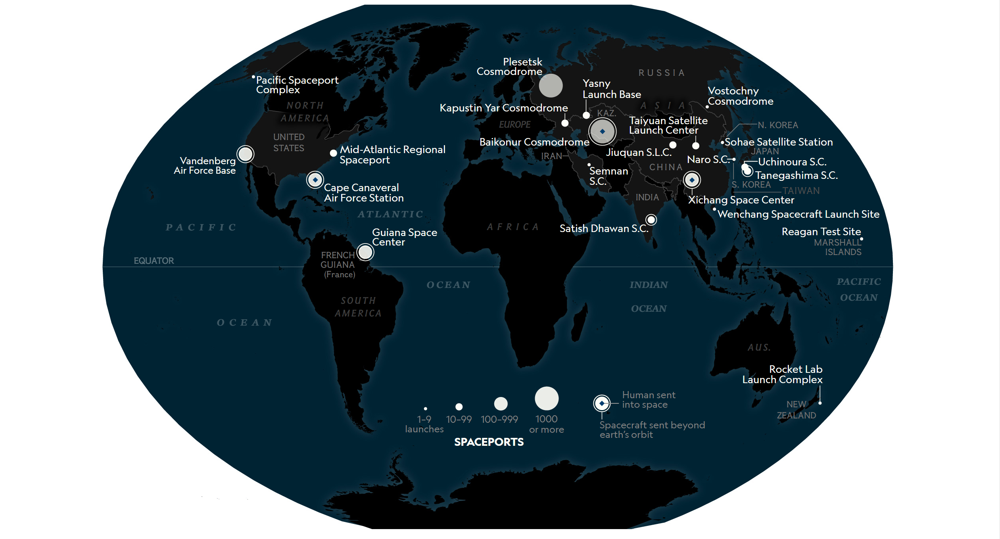

About Us
Photo of the developers:
Luca, Sameer, Sab, Will, Rumaysa
We are budding, young entrepreneurs who have spotted the lack of interest in astrophysics among the younger more vulnerable generation, as a consequence of lack of education. Today's actions influence tomorrow's beginnings. The UN looks to improve the studies of those who have the ability to shape the future . Currently that refers to all young people in the world. Could we really look into the eyes of a 10 year old, and turn their dedicated, science loving hearts down?
Next launches
Last updated: 21/10/18

Our beginnings
Intu Space came up with the ideal solution: Rocket Launching. One of the first air -vehicles, that toddlers are taught about. We all remember those nursery rhymes that sang: 5, 4, 3, 2, 1, Blast Off! But many young children lose their passsion in this subject, that allows a range of broadening careers. We wish to encourage the arhitects of tomorrow to regain a love for the Earth and space through our website. This site was created by young people for young people. We understand the interests of the younger population, and with that in mind, we adapted our site to allow the 10-18 yr old scientists to develop their learning of the outer world.